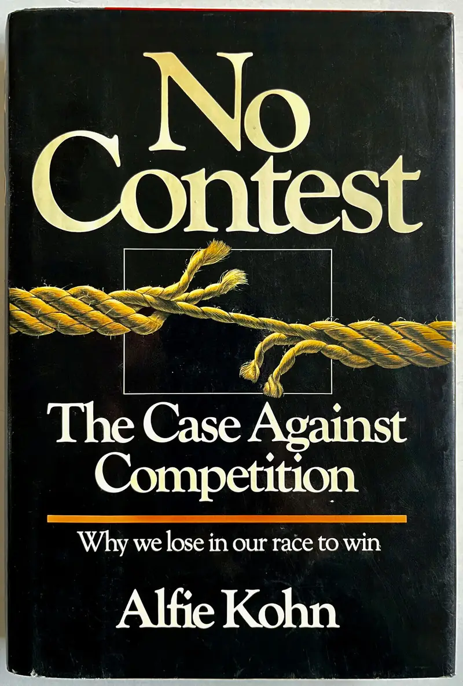
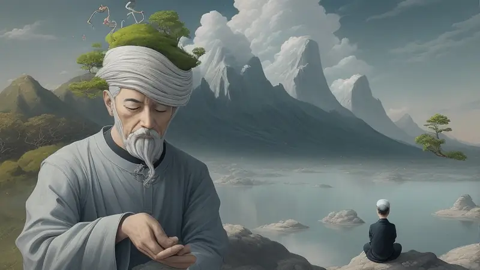

No Contest: The Case Against Competition

First and foremost, I urge you to listen to this audio video by Alfie Kohn, the author of the book 'No Contest: The Case Against Competition':
Alfie Kohn - The Case Against Competition
https://www.youtube.com/watch?v=S4si1HaDmLg
It was one of the most eye-opening and useful talks I have heard in my life in regards to competition.
It single handedly stopped me from playing any competitive multiplayer games ever again or participating in anything that is centered around competition. It also deeply affected my own creative output that I will never make anything that involves competition both in a video game and in real life.
This may come as a shock to you, but competition actually damages, stifles and distorts innovation!
ChatGPT summarizes his book in this way:
“Alfie Kohn's perspective, as presented in "No Contest: The Case Against Competition," challenges the notion of healthy competition, arguing that the negative consequences often associated with competition can outweigh the perceived benefits.
Kohn suggests that competition tends to foster stress, anxiety, and a focus on winning at all costs, which can be detrimental to individual well-being and collaborative efforts.
In Kohn's view, the term "healthy competition" might seem contradictory because the inherent nature of competition, as commonly understood, involves winners and losers, which can create a range of negative outcomes.
Instead, he advocates for cooperative and collaborative approaches that emphasize intrinsic motivation, personal improvement, and a focus on the process rather than the outcome.”
In other words, the whole concept of "healthy competition" is an oxymoron, a farce, a travesty, a mockery and outright bullshit. There is nothing healthy about competition. Competition at its very core is a self-destructive and toxicity inducing activity.
Again, the audio linked above explains these points in full detail so I strongly suggest listening to it fully. It's 100% worth your time and potentially life changing like it was for me.
Forking, the true driver of innovation
My input to this topic is to foster a new trend to replace the word "competition" with "forking" when it comes to driving innovation.
I think the word “competition” is misleading, incorrect and harmful for reasons heard in the audio; it simply doesn't fit the definition.
I believe people have merely learned to repeat it like parrots because "everyone says so", failing to stop and notice that they're relying on someone else's misguided view of innovation instead of using their own brains.
Forking is much more accurate and captures the real mechanism of how genuine innovation actually happens.
When I see something existing that I don't enjoy, my goal is not to have the creator of that existing unfun thing live rent free in my head and have me focus on how I can put them down.
That's obviously absurd but that is what competition encourages everyone to focus on. It's not okay and it's not healthy.
What actually happens is that I see something - an idea, a vision - that has potential to be something better. I adopt the good parts and remove the bad parts then I build my own project based on my desires.
I diverge from the original, I evolve from it, I fork from it in a different direction. At no point do I think about the other creator other than feeling disappointment they didn’t think to do this before.

My goal is to simply make something better. I don't compete. I get inspired or annoyed by something and then go my own path to make a better product or service than what currently exists. At no point am I intrinsically competing with anyone, it's not a thing that is even in my mind.
My mentality is more along the lines of "screw this, your stuff sucks, I wanna do it my way" instead of "oh I'm going to make you look bad by making my thing better than yours".
In the former, my entire focus is on how I can make the thing better, while in the latter I'm stuck in a toxic loop of comparing myself to others.
Also in the latter the environment has been poisoned from the start and I'm no longer fully focused on excellence on making the best decisions for my project for its own sake like it is the case in the former.
In other words I’m more likely to sabotage myself by accident because my full attention isn’t on the task at hand because I’m taking up my mental resources to think about some arbitrary competitive event between me and them. In the worst case, the other party doesn’t even know it's a competition, making my focus on competing with them be a sad, embarrassing, one-sided tantrum.
Ultimately the best insult to give someone is to forget them and just focus on making my project as excellent as possible for its own sake.
Talk about it
Questions, disagreements and ideas of your own are all welcome. Discuss this article with other readers on the Reactorcore Games Discord, follow new articles and dev news on Patreon, or write to me directly.